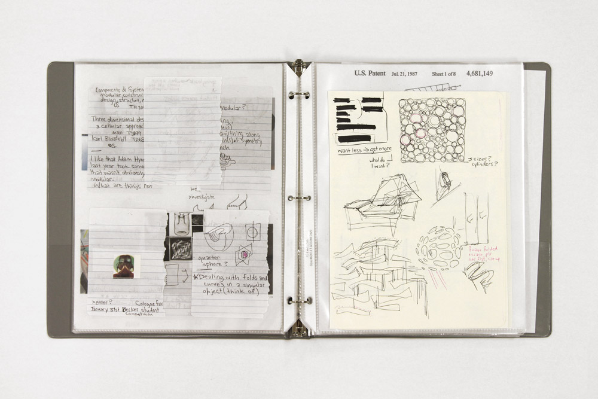
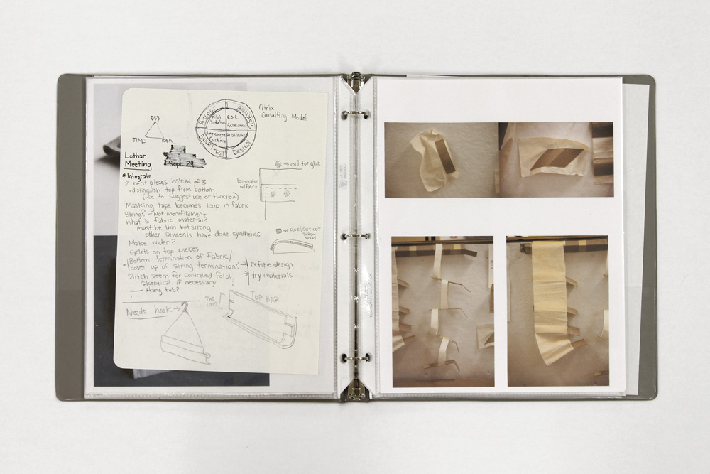
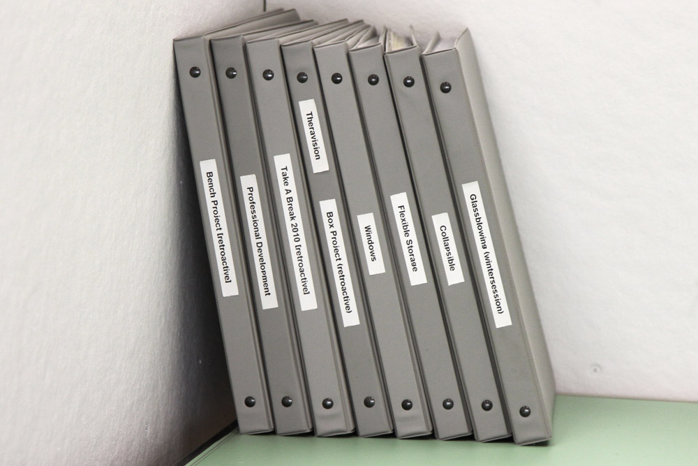
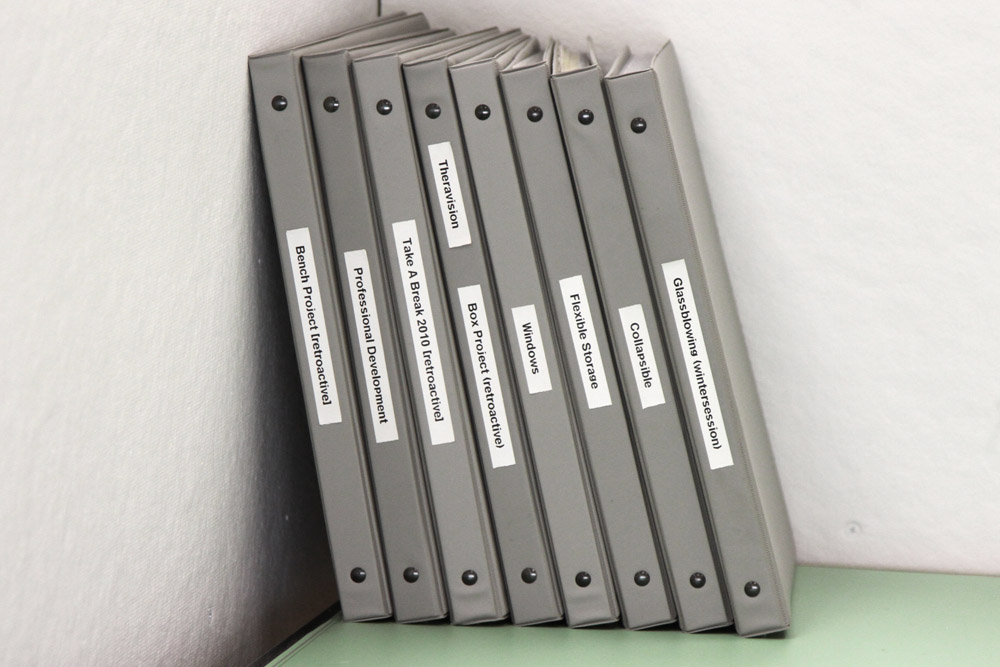
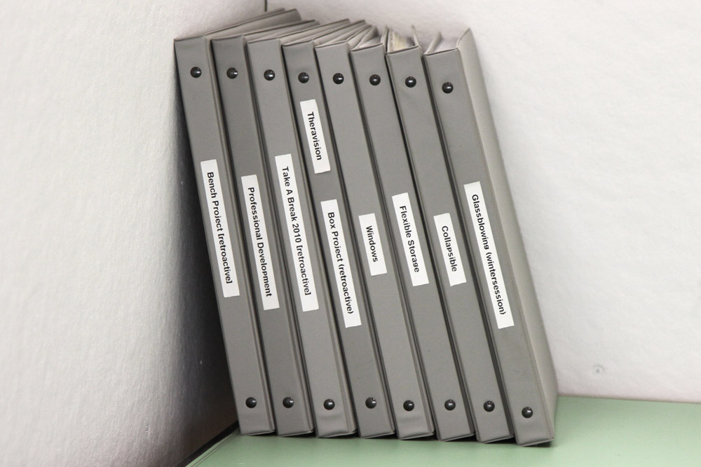

Inspiration and Documentation
ongoing / multimedia
My inspiration spans a wide range of topics from design to fine art, architecture to fashion, and photography to literature. I am most attracted to creations with integrity and consistency in their conceptualizations and executions. I know when someone's work inspires me because I wish I had made it myself and am compelled to celebrate its successes.

The thorough documentation of my process and work in the form of archival binders has become an indispensable part of my development. By documenting my process like this, I am able to identify and work through, in detail, my weaknesses and strengths as a designer and creative person.


 


>
<